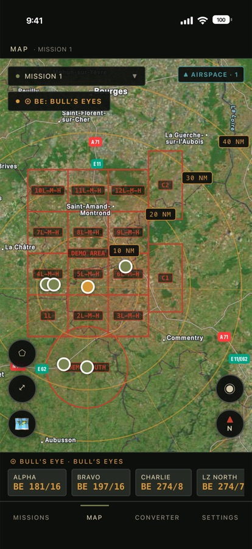
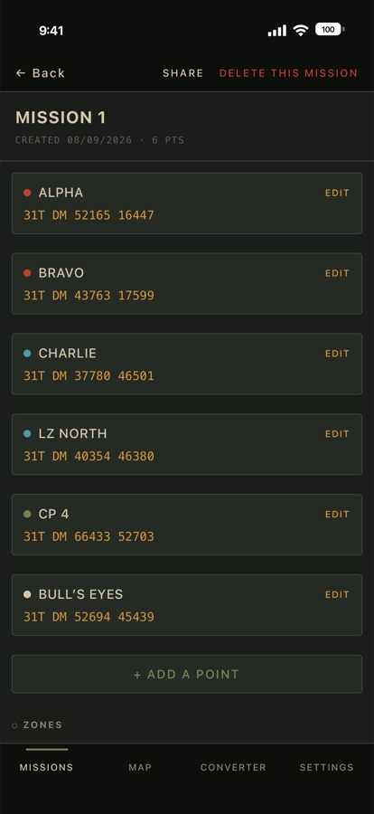
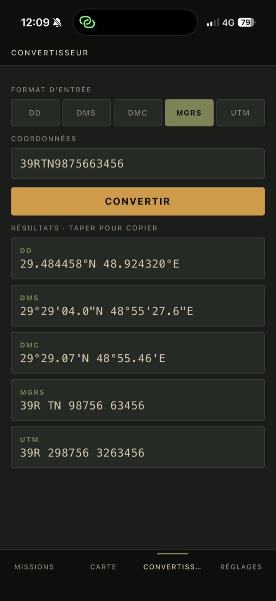

Plotting tactique. Rien ne quitte votre appareil.
Reportez des points, calculez des relèvements en Bull’s Eye, convertissez des coordonnées entre cinq formats, tracez vos zones et chargez vos propres espaces aériens — sur une carte satellite, sans compte et sans collecte de données.



Vos points et vos zones regroupés par opération. Nom, coordonnées, rayon en mètres, pieds ou milles nautiques, couleur. Déplaçables au doigt, annulables d’un geste.
Désignez une référence : relèvement et distance de tous les autres points, rose graduée tous les 10 NM jusqu’à 120, radiales tous les 30°.
Degrés décimaux, degrés-minutes-secondes, degrés-minutes décimales, MGRS et UTM. Dans les deux sens. Touchez la carte pour lire, touchez un résultat pour copier.
Tracez un polygone au doigt, ajustez chaque sommet, lisez sa surface et son périmètre pendant que vous dessinez.
Chargez votre zone de travail depuis vos fichiers : KMZ, KML, OpenAir, GeoJSON. Cartes géoréférencées ou contours. Plusieurs à la fois.
Carroyage GARS en 30’ ou 15’ avec ses désignateurs, superposé au fond de carte.
Deux appuis sur la carte donnent le cap et la distance entre les deux points.
PlotZone (.json), KML, KMZ, GPX. Rayons et couleurs survivent à l’aller-retour.
PlotZone ne collecte, ne stocke et ne transmet aucune donnée personnelle. Vos missions sont enregistrées uniquement sur votre appareil. Votre position GPS ne sert qu’à l’affichage local sur la carte : elle n’est jamais transmise ni partagée. Aucun compte, aucun traceur, aucun outil d’analyse, aucune publicité.
Français, anglais, espagnol, allemand, italien, néerlandais, portugais et chinois.
Les conversions de coordonnées et les calculs de distance sont fournis à titre indicatif. Vérifiez toujours vos données auprès d’une source officielle avant tout usage critique. PlotZone n’est pas un instrument de navigation certifié.